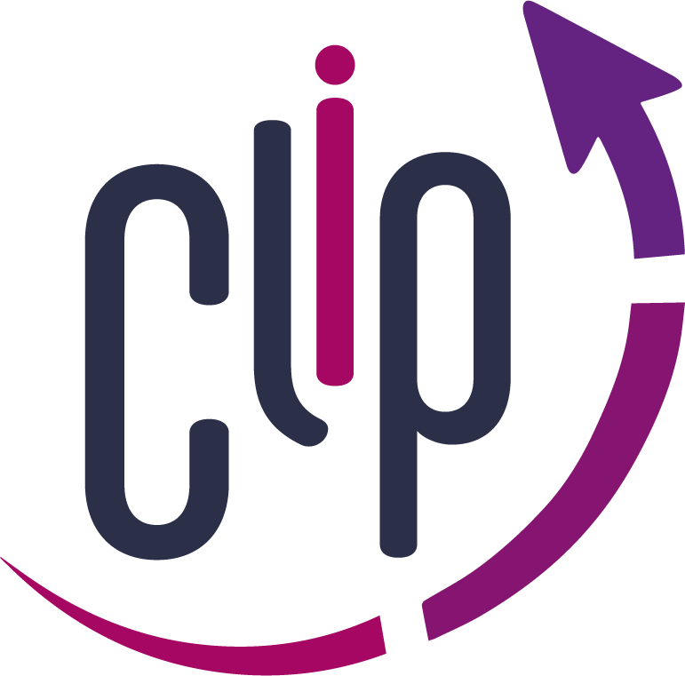
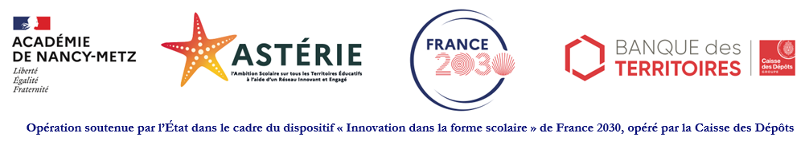

Une formation par l’ENSGSI de l’Université de Lorraine
Programme d’Incubation d’Équipes d’Innovation Collaborative
Un parcours collectif pour développer vos tiers-lieux éducatifs, expérimenter vos idées et construire la suite ensemble.
Votre prochaine étape
Rendez-vous à la Cab’Inn - 8 rue Bastien Lepage, 54000 Nancy.
L’équipe de directrices et directeurs des tiers-lieux éducatifs du programme ASTERIE, porté par le rectorat de l’académie de Nancy-Metz.
Du 14 octobre 2026 à juillet 2027.
Un kick-off, cinq sprints et un atelier de clôture.
En présentiel à l’ENSGSI et à distance sur les plateformes de visioconférence de l’Université de Lorraine.
Chaque étape associe des objectifs, un atelier et des livrables. Les consignes sont dévoilées progressivement.
Université de Lorraine · ENSGSI–ERPI

Une question sur le programme ou la préparation d’un atelier ?